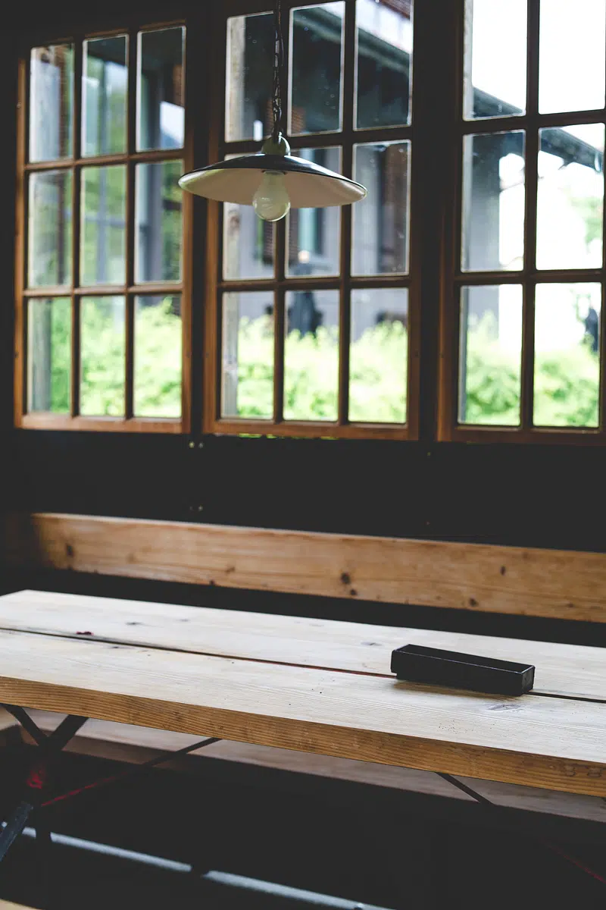
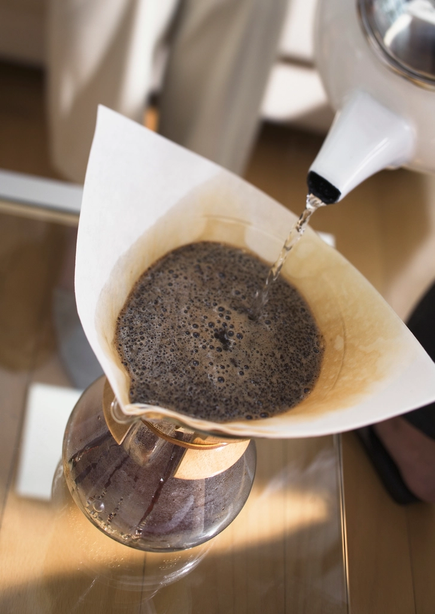

灯りの間取り
木造の店内に灯る、静かな時間をご紹介します。掲載写真はイメージであり、実際の店内とは異なります。
Wooden Interior
木造の店内
柱や梁、床板まで木造のまま時を重ねた店内には、古い照明の灯りがやわらかく広がります。「明治か大正時代にタイムスリップしたような」と評されることもある独特の雰囲気は、この店だけの佇まいです。
PHOTO
PLACEHOLDER
By the Window
窓辺の席
店の目印である大きな三角屋根の出窓のそばには、窓辺の席がしつらえられています。差し込む光のもとで、お気に入りの一冊を片手に、ひとりゆっくりと過ごすお客様の姿もよく見られます。

Beans & Brew
コーヒーと豆
カウンターの奥では、2年以上寝かせたオールドビーンズが丁寧に抽出されていきます。豆の香りと、一杯を淹れる所作の丁寧さも、この店の時間の一部です。

最新の店内の様子はInstagramでもご覧いただけます。
掲載写真はイメージです。実際の店内・お料理とは異なります